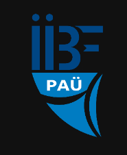
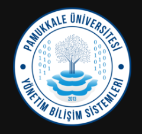

2026-2027 Güz YBS 319 dersine ait materyaller ve çalışma kaynaklarıdır.
Her haftaya ait ders materyalleri PAÜ Bulut klasöründe yer alır.
Klasörü aç ↗ PDFDersin konularını ayrıntılı anlatır.
PDF'i aç ↗ 15 Konu özetleriDerste işlenen konuların tek sayfalık özetlerini içerir.
Posterlere git → 50 Vize hazırlıkVize konularından 50 çoktan seçmeli soruyu içerir. Her sorunun ayrıntılı çözümü ve ilgili özet postere bağlantısı bulunur.
Sorulara git →